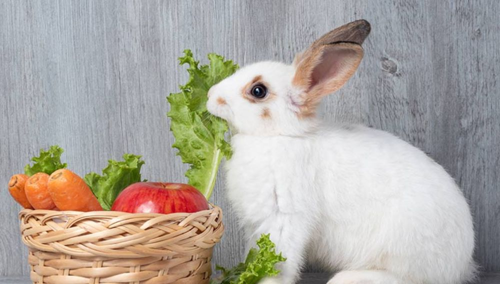

Zakrslí králíci chovaní ze záliby jsou oblíbení domácí mazlíčci hlavně v městských bytech. Zpravidla se chovají v klecích, která by měla mít minimální co největší rozměry (ideální jsou 100×60 a s plastovým úkrytem). V kleci by měla být podestýlka (např. kočkolit), neustále pak seno a voda. Je vhodné, aby měl i pravidelný výběh mimo klec.
Králíci jsou nejčastěji chováni po jednotlivcích, kvůli vysoké teritorialitě, dva králíci v kleci se téměř jistě nesnesou. Králík je citlivý na hluk, jeho klec by proto měla být v tiché části bytu (ne u televize apod.) a také by neměl přicházet do styku s tabákovým kouřem.
V domácnostech se často stává, že králík příliš ztuční (nevhodná strava). Základem krmné dávky by mělo být kvalitní seno granule pro králíky v dávce 2–3 % hmotnosti dospělého zvířete (5–6 % nebo neomezeně u mláděte). Hlavní složku krmné dávky králíka by měla tvořit objemná krmiva, v drobnochovech tedy seno a sláma. Je možno krmit také zelená krmiva (např. bazalka, brokolice, celer, čekanka, jabloňové listí, jitrocel, kapusta, kokoška pastuší tobolka, kopřiva (zvadlá), pampeliška, petržel, salát, nejedovaté plevele – pýr, lebeda apod.)
